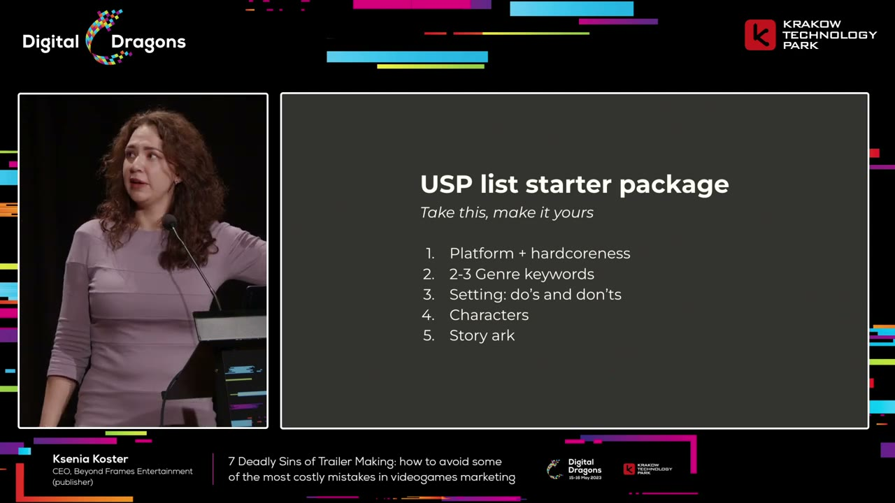
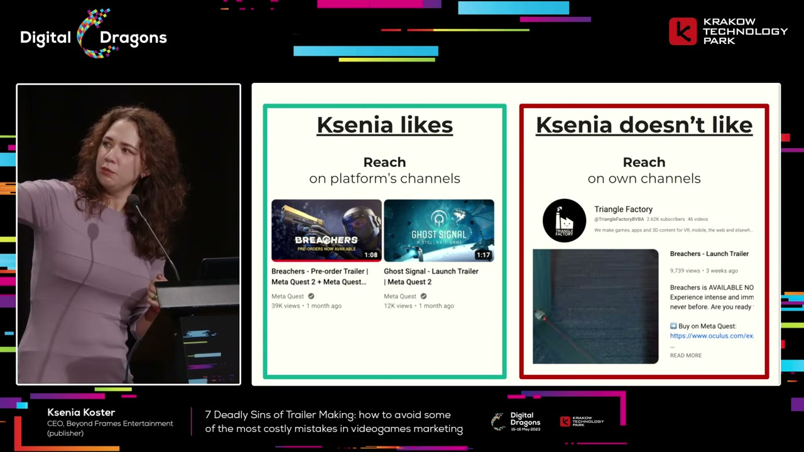
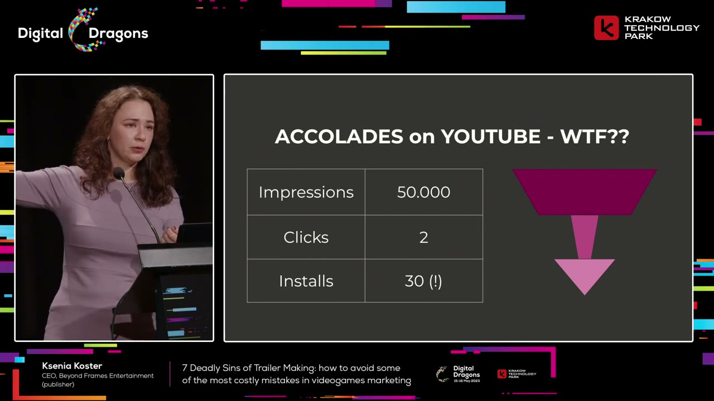
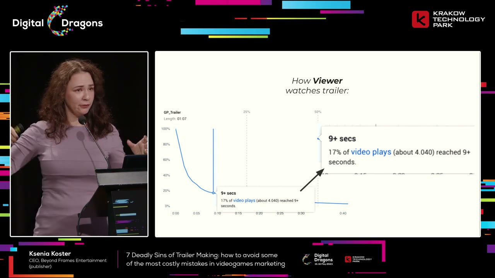
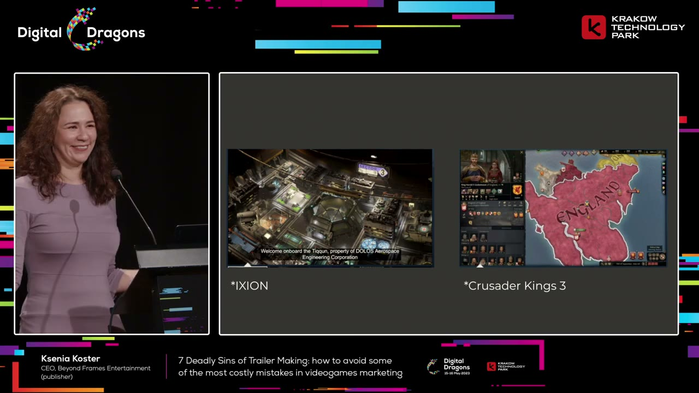
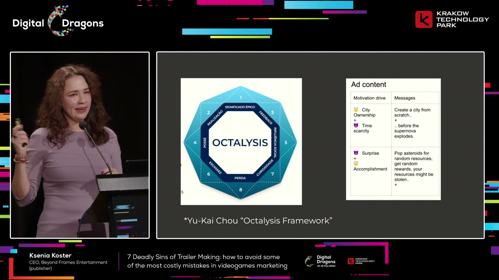

Start here
The overview
A trailer is a tool for helping a prospective player decide whether a game offers an experience they want. It has to work in the place where it appears, for the audience that actually needs convincing. A beautiful edit, a long feature list, and enthusiastic internal approval do not establish that it does its job.
In this Digital Dragons talk, performance marketer Ksenia Koster works through seven recurring failures: vanity, poorly chosen metrics, ignoring viewing context, wasting the opening seconds, confusing the trailer's purpose, mismanaging creative risk, and giving up after a failure. Her central concern is the opportunity a weak trailer loses: attention, excitement, trust, and ultimately a decision to wishlist or buy.
What the snapshots add
- The USP slide supplies five grouped briefing categories. The spoken recommendation of at most seven features is a separate limit.
- The reach screenshots compare a Breachers pre-order trailer with an owned-channel launch trailer, so they do not prove that the exact same cut performed better on one channel.
- The anomalous funnel has concrete values: 50,000 impressions, two clicks, and thirty installs. The retention example is a 67-second video.
- The player-fantasy comparison visibly contrasts unfamiliar worldbuilding with a ruler interface and an England map. The motivation slide adds specific supernova and asteroid-resource examples.
What to take away
- Decide what matters before editing.
Agree on a focused set of selling points and the wording of on-screen text. The trailer should communicate the experience, not document everything the team built.
- Measure the audience you are trying to persuade.
Separate paid from organic traffic, put reach in a comparable distribution context, and interpret sentiment within the intended audience.
- Make the opening earn its place.
Many viewers will never see the payoff at the end. Spend disproportionate effort on the first ten seconds and test them with and without sound.
- Show a recognizable player fantasy.
Give viewers a reason to care about what they can do or become before asking them to absorb unfamiliar lore. Excitement should help them make a decision.
- Protect creative work with alternatives.
Trust trailer specialists, avoid giving every stakeholder a veto, and plan a safer alternate edit with the people who bear the actual publishing risks.
Why make a trailer if so many of them disappoint?
Koster introduces herself as a freelance marketer whose strongest specialty is performance marketing for games. Her work involves taking advertising budgets, putting them into channels such as Facebook, Google, and TikTok, and trying to turn that spending into wishlists or sales. That perspective makes her impatient with trailers that look expensive but communicate little.
Her dislike has several sources. As a viewer, she often finds trailers slow relative to the amount of useful information they contain. As a player, recommendations from friends can matter much more than a trailer. As a professional, she sees teams spend substantial time negotiating a trailer until the result satisfies nobody particularly well. The edit becomes an accommodation of everyone's opinions instead of a strong piece of communication.
Nevertheless, she gives two reasons that trailers deserve serious effort. First, the distribution environment demands them. On storefronts, the trailer is a prominent part of the first impression. She refers to a Steam attention heat map discussed at the conference in which roughly half of viewing time went to the trailer. This is a measurement she cites in the talk, not a universal conversion rule. The inspected storefront slide shows the prominence of video on Steam and a mobile listing, but it is not itself the attention heat map; the roughly-half figure remains a claim from her narration.
Second, a successful trailer creates opportunity. It can win attention, improve how people feel about a game, give enthusiastic players something useful to share, prompt a purchase, and strengthen a studio's reputation. A good trailer lets an advocate communicate excitement to a friend much more easily than a description alone.
A poor trailer can waste production resources, set expectations the game cannot fulfill, or create a weak first impression. But Koster argues that those risks do not justify ignoring the format. The potential benefits outweigh them. The practical question is how to produce something that earns those benefits rather than simply meeting the requirement to have a video.
The viewer who arrives without trust needs the trailer most
Koster recommends including the paid-advertising person when asking for feedback on a trailer. Trailer decisions often sit with brand managers, product marketing, or producers. The advertising specialist has a useful additional perspective: their results depend on whether the store page can persuade someone who arrived with little existing trust.
She illustrates this with three imaginary players. One hears about a game from a friend. Another hears about it from a favorite YouTuber. The third clicks an advertisement. All three may reach the same storefront, but the recommendation behind the visit is different. The slide makes those routes explicit with a dog, a bear, and a frog. These are illustrative personas, not measured categories or trust scores.
The friend-referred player may already be ready to buy. The review-referred player may need little more than confirmation that this is the game they saw discussed. The ad-referred player has not received the same personal endorsement. The advertisement earned a visit; the store page still has to justify the purchase. That visitor scrutinizes the trailer because it carries more of the burden of persuasion.
This is why Koster cares about the trailer even when she is not its usual internal owner. A weak video can undermine the return on the traffic she has paid to bring in. Her point is not that every visitor behaves identically, but that the trailer should be evaluated with the less-convinced visitor in mind, rather than only by people who already know and love the game.
1. Vanity: a trailer does not need every feature
The first failure is treating the trailer as recognition for everything the studio has made. Koster describes a producer reviewing an edit and asking where all the game's selling points went. A game may contain many distinctive worlds, environments, or bosses. That does not mean every one should appear in the trailer.
Selection should follow what communicates and sells, not the team's investment in creating an asset. She gives the deliberately blunt example of caves: an environment can be enjoyable in play while looking unappealing in a short promotional shot. Its existence in the game is insufficient reason to include it.
Her remedy is to agree on a short list of unique selling points before production, with roughly seven features as a ceiling. The actual starter slide groups the briefing into five numbered categories: platform plus player commitment; two or three genre keywords; setting boundaries; characters; and story arc. These are groups to adapt to a particular game, rather than seven mandatory slots. In VR, making the platform clear is particularly useful because footage can otherwise be mistaken for a mobile game.
The genre language should be stable enough for a prospective player to recognize what they are looking for. The setting brief can be looser: establish useful boundaries and things to avoid without dictating every creative choice. The story should make its broad appeal legible. A familiar quest structure can be an advantage because recognition itself creates pleasure and helps the viewer orient quickly.
Koster also recommends approving the wording of text plates at the same early stage. If one stakeholder calls the game a team-based shooter and another calls it a cooperative adventure, that disagreement will repeatedly reappear during editing. Resolve the description before an agency is working against it. Shared language and shared priorities prevent avoidable rounds of rework.


2. Poor metrics: reach and conversion need context
Koster first asks whether the trailer has numerical goals at all. Then she distinguishes measurements that help a business decision from measurements that merely look impressive. A large aggregate view target or a senior executive's enthusiasm is not enough to tell a team what success means.
For reach, she prefers examining performance on a platform's channel rather than relying only on views on the developer's own accounts. An owned channel's count can mix existing followers and paid distribution in ways that make it hard to interpret. A platform channel offers a different context, including nearby releases against which to compare the response.
The slide makes the example more specific than the spoken shorthand. Triangle Factory’s owned-channel screenshot is a Breachers launch trailer with 9,739 views and about 2,620 subscribers. The Meta Quest examples show a Breachers pre-order trailer at 39,000 views and a Ghost Signal launch trailer at 12,000. The Breachers videos are labeled differently, so this visual does not establish a controlled comparison of the exact same trailer cut across channels. It supports her argument for contextual benchmarks, while leaving creative, timing, audience size, and paid distribution as possible differences.
For conversion, she warns against blending all storefront traffic into a single rate and declaring it good or bad. Someone arriving through a paid advertisement may have very different intent from someone arriving organically. An aggregate can conceal those differences. Separate traffic types where possible and interpret the resulting rates according to how those visitors arrived.
She acknowledges that attribution and traffic separation can be awkward on particular platforms. The captions do not provide a reproducible technical method for solving that problem. The actionable principle in this section is to design a measurement that reflects the audience and business objective, rather than treating a blended percentage as a complete evaluation.


A hostile response can reveal an audience mismatch
Sentiment is easy to dismiss: online audiences can be harsh, and no trailer can please everyone. Koster argues that it can still be useful if it is tied to the audience the campaign is supposed to reach. Her example involves two campaigns from spring 2023.
One campaign received enthusiastic comments. Viewers praised the video, tagged friends, and shared or saved it. The other attracted complaints about the game's appearance, the state of the games market, and the advertising itself. The supporting engagement measurements agreed with the difference in comments: the disliked campaign was not being saved or shared in the same way. The engagement slide adds exact counts: the negatively marked row has 55 reactions, 11 comments, five saves, and five shares; the positively marked row has 325 reactions, 19 comments, 87 saves, and 21 shares. Saves and shares are explicitly highlighted. These are absolute counts with no exposure denominator shown, so they should not be read as normalized engagement rates.
The business results followed that pattern in her account. The well-received campaign returned money; the poorly received one did not recover the investment. The important reveal is that both campaigns used the same video and advertising material. The changed variable was targeting.
Interest-based targeting worked in this example. A lookalike audience based on people who had purchased the game did not. That does not establish a general rule against lookalikes. It demonstrates why neither angry comments nor strong creative can be interpreted independently of the people seeing it.
Koster's recommendation is to consider sentiment within the intended target audience as a useful indicator, alongside business outcomes. A general demand to be liked by everybody is unhelpful. A more useful discussion asks what emotion the trailer should evoke in the people it is trying to persuade, whether it does so, and whether that response leads toward the campaign's goal. KPIs should align the team around those decisions.
3. Ignoring context: the video is only part of the experience
A trailer can work against the other material surrounding it. Koster recalls a horror game's Steam page with a tense, threatening video: distortion, ominous music, and frightening antagonists. Beside it, the short description explained that the player defeats the corporation turning office workers into zombies. In her reading, the description spoiled the uncertainty the trailer was trying to create. Material copied from a pitch deck had not been adapted to its storefront context.
Viewing context also includes the device, screen size, aspect ratio, sound, login state, and attention available on the platform. A television, a phone, a vertical social feed, and a storefront are different environments. The same edit should not be assumed to work equally well in all of them.
Her remedy is practical UX research: observe people discovering and buying games, look at what they open and compare, and use qualitative observation alongside heat maps and quantitative measurements. Calling a decision data-driven is not a substitute for obtaining data about how the audience actually behaves.
Two production habits follow. Ask for square and vertical versions in the creative brief so they are planned rather than improvised. Review every video without sound. She also defends text plates: clear on-screen wording helps a distracted viewer understand a message they may not have the time or attention to infer from the visual story alone.
Context can create unexpected opportunities as well as mistakes. The inspected slide for an accolades campaign reports 50,000 impressions, only two clicks, and thirty installs. That is the numerical puzzle behind her story: recorded installs exceed recorded clicks, so a simple click-through funnel cannot explain the result. Investigating the distribution revealed, in Koster’s account, that 96 percent of impressions had appeared on smart TVs because she had not applied her usual device restrictions.
A television viewer cannot interact with an advertisement as a desktop or mobile viewer would. The missing clicks therefore did not mean the campaign had generated no interest. Koster reports that the television audience converted well and that the placement became one of her better channels. She interprets the leisurely viewing situation as a good moment to remind people about a game. The account does not establish an attribution methodology; it illustrates why expected funnel behavior must be checked against the viewing environment.
The larger cost of ignoring context is a missed opportunity. Adapting the message to the actual situation can matter as much as correcting an obvious creative mistake.


4. Wasting the opening: most viewers never reach the climax
Koster contrasts an editor's intended dramatic arc with an audience-retention curve. The creative plan has an opening, a steady buildup, a spectacular turning point around forty seconds, and a final presentation of the title that is supposed to drive wishlists. The audience may have left before almost any of that happens.
The inspected retention chart identifies a gameplay video lasting 1:07, slightly longer than the one-minute shorthand in the narration. Its callout says 17 percent of plays—about 4,040—reached nine seconds or longer. The curve loses most viewers near the beginning and then flattens into a small tail. Koster describes the result as above average for that Facebook context, not a failed advertisement. It is one campaign example, not a universal retention benchmark.
Her prescription is to devote a disproportionate amount of effort to the first ten seconds. Make alternatives, watch them with and without sound, and observe how quickly a real viewer disengages. The opening may be the only impression of the game most of that audience receives. A strong payoff later cannot compensate for a beginning that fails to hold them.
This does not mean all trailers should be ten seconds long. The longer edit has another audience: people who already care. For midcore and hardcore games, she likes directing the material after the opening toward the committed fans who will continue watching.
She uses a recognizable property such as Warhammer 40,000 to illustrate the point. Enthusiasts may arrange to watch a premiere and inspect its details. Those viewers are valuable advocates, and the later material can reward that interest. Her comparison is to the extra payoff Marvel gives viewers who stay through the credits: design for the people who stay, while ensuring the beginning works for everyone else.


5. Confusing the purpose: help the player make a decision
A trailer is not a commemorative film about the game's importance. Its purpose is to serve the person deciding whether to play. Koster mentions asking ChatGPT whether she should make a game trailer. Most of the response struck her as generic, but one reminder was useful: trailers help people make informed purchase decisions.
On a store page, the desired action is usually a purchase or another meaningful step toward playing. Watching the entire trailer is not necessarily the goal. If someone becomes convinced quickly and stops watching in order to buy, the trailer has done its job. Keeping that person in a passive viewing state can even give them more time to talk themselves out of the decision.
Koster calls her creative test following the dopamine. She means looking for the excitement that makes the intended viewer want to act, remember the game, or tell somebody about it. This is her marketing shorthand for emotional value, rather than a measured neurological account of the footage.
Apply that test to each piece of the edit. Does this shot, frame, or cutscene communicate efficiently and give the audience a rewarding reason to care? If it does not, remove or replace it. The standard is the viewer's response, not how much effort went into producing the material or how much the team wants it included.
Sell the player's fantasy before asking them to learn the world
To make that emotional test concrete, Koster compares early trailer stills from IXION and Crusader Kings III. The comparison is a discussion of those particular presentations, not an overall verdict on the games. She explicitly acknowledges that different target audiences can prefer different examples.
The paired slide shows two different ways of introducing a game. IXION presents an overhead industrial station interior with a subtitle welcoming the viewer aboard the Tiqqun and naming DOLOS Aerospace Engineering Corporation. Crusader Kings III presents a game interface with ruler portraits, other characters, resource indicators, and a map visibly labeled England. The second image communicates both a familiar setting and the fact that the player will manage something inside it.
Koster and the audience discuss people, management, visible activity, and implied story as reasons the Crusader Kings image holds interest. Her preferred explanation is the quickly recognizable player fantasy: the viewer can imagine becoming a medieval ruler with a court and a realm. The visible interface is important here. This is not simply a recommendation to replace gameplay with a glamorous cinematic character shot; the mechanics-facing image can itself express the desired role.
The difference is between explaining a fictional world and making the viewer want an experience. The first can be valuable after interest exists. In the opening portion of a trailer, Koster prefers the second: show enough that the intended player can recognize the kind of enjoyment they are being offered.
The snapshots establish what these particular stills contain, not how either full trailer unfolds or whether one game is better. Her explanation supplies the interpretation; the images supply a concrete contrast between a fictional-world introduction and an immediately legible role. Different audiences may respond differently, as she acknowledges.


Combine a desirable role with a reason to act
Koster recommends Yu-kai Chou's Octalysis framework as a tool for thinking about motivation. She presents it as an approachable gamification framework that can help an advertiser think about the response an advertisement is designed to create. The talk does not teach the full framework.
The slide gives a more concrete version of the positive-and-negative combination she describes. A city-builder advertisement pairs city ownership with time scarcity: the player can build a city from scratch, but must do so before a supernova. The appealing role and the impending event reinforce each other. The ticking clock in the narration is therefore a specific scenario in the example, rather than an unexplained generic deadline.
Together, the two offer both attraction and urgency. The viewer wants to inhabit the creative role, while the pressure gives the situation momentum. Koster likens the combination to balancing sweetness and sourness. Her recommendation is to think deliberately about the motivating conflict in the advertisement, rather than assuming attractive footage alone creates a reason to act.
A second row, visible on the slide but not developed in the spoken explanation, pairs surprise with accomplishment. Its example involves breaking asteroids for random resources and rewards, alongside the risk of resources being stolen. That expands the same principle: pair an attractive possibility with uncertainty or pressure. These are examples from Koster’s ad-design material, not prescriptions that every city-builder should use a supernova or randomized rewards.


6. Poor risk management: trust specialists and plan a safe edit
Creative risk is real. A trailer can imply an experience the game does not deliver—for example, suggesting cooperative or team-based play when the game is actually single-player. Expensive production does not eliminate that danger. Koster cautions against putting a large budget, such as her hypothetical $300,000, into one supposedly irresistible execution simply because the studio can afford impressive production techniques.
The common alternative is not much better: let many stakeholders control the one edit. She recalls a production with 23 official stakeholders across six departments, from junior brand roles to a vice president, all able to comment and veto. Their time carried a substantial cost. She argues that the same resources could have supported more than one trailer. The committee slide illustrates the problem with a crowd watching one person dig; it is a visual joke about review overhead, not documentary evidence of those 23 stakeholders.
The greater danger is the creative result. Negotiating every objection can produce an inoffensive but indistinct compromise. That blandness has a business cost because it throws away the chance to hold attention, excite the audience, or make the game memorable.
Her remedy starts with trusting people whose specialty is trailers. She points to film production, where trailer-making can be a separate craft from directing the film itself. Being a good game designer or lead artist does not automatically make someone the right person to dictate every trailer choice. Give the specialists meaningful creative freedom.
Then manage the downside with alternatives. Koster recommends planning at least two edits, including a safer version that can be used if the main one causes problems. This does not require treating every stakeholder preference as a mandatory alteration to the bold version. It creates a fallback so the main idea can retain its character.
She gives an example involving a provocative close-up and a potentially contentious voiceover choice. A store-safe alternate was planned from the beginning. That fallback let the team release the main cut, which she reports was well received by the community, while retaining an option for the more constrained placement.
The inspected safe-edit slide identifies three responsibility groups: publishing director or manager; PR manager and diversity officer; and legal and compliance. Koster’s explanation connects them to store requirements, public controversy, and rights or legal questions. The list is based on who must handle a problem if it occurs, not on collecting approval from every senior person. The slide does not include the studio CEO or marketing vice president. These are the roles she identifies, not a requirement that every studio have those departments.
Executive rank alone does not establish a useful veto. The relevant distinction is who will actually have to solve the problem if the release goes wrong. Involve those people, agree on the fallback, and make it possible to switch to it. Trust and concrete contingency planning can preserve creative quality while respecting real constraints.
7. Despair: a failed trailer needs a postmortem and another attempt
The final mistake is giving up. Koster recalls a launch where the team appeared to have everything it needed: time, budget, and capable people. On release day, the creative director told her it was the best trailer they had ever made. It still attracted almost no interest. The game's launch also suffered server problems that damaged its first weekend.
The story underlines the gap between internal satisfaction and audience response. A team can be proud of the work and still fail to generate interest. No production process provides a guaranteed formula for entertainment.
Koster's response is to regroup, hold a postmortem, and try again. Treat the result as something to learn from rather than proof that the team should stop. Her closing comparison is to playing games: a failed attempt is a reason to get up and make the next attempt. The work is to keep improving the trailer until it connects.
Source & limitations
This is an editorial synthesis of Deadly Sins of Trailer Making: how to avoid some of the most costly mistakes in videogames marketing, published by Digital Dragons. Timestamp links open YouTube at the corresponding section.
- Based on the full English automatic-caption track plus twenty inspected snapshots selected around slide-dependent explanations. This is selective visual inspection, not continuous review of the entire video or its embedded trailers.
- The snapshots and timestamped observations are saved with the source. Six especially useful frames are reproduced in this edition; others confirm context or reveal that the selected instant contains only a title or reaction image.
- Small text and audience remarks can remain uncertain. No hidden slide content or motion between snapshots has been reconstructed. Chart values describe the slides as presented, not independently audited measurements.
- Campaign results and platform claims come from this talk, uploaded in August 2023, and have not been updated to describe current platform behavior.
Inspected snapshots (20)
Selected stills, not continuous video review. Observations below describe the inspected frames.
2:50 ↗
- The slide juxtaposes a Darkest Dungeon II Steam storefront and a Peridot mobile store listing. Arrows point into the Steam trailer area; this frame is not the attention heat map mentioned in the narration.
5:50 ↗
- This is the audience-trust section title slide. The three discovery paths have not yet appeared in this snapshot.
6:50 ↗
- The slide depicts three discovery routes with animal icons: a friend, a YouTuber, and a paid advertisement. It is a conceptual diagram, not a quantitative trust measurement.
9:10 ↗
- The starter USP slide has five numbered groups: platform plus player commitment; two or three genre terms; setting boundaries; characters; and story arc. The spoken seven-feature ceiling is not the number of numbered groups on this slide.
11:30 ↗
- The owned-channel example is a Breachers launch trailer on Triangle Factory. The screenshot shows 9,739 views and approximately 2.62K subscribers.
11:50 ↗
- The platform examples are a Breachers pre-order trailer with 39K views and a Ghost Signal launch trailer with 12K views on Meta Quest. The owned-channel example is a Breachers launch trailer with 9,739 views. These screenshots are not labeled as identical trailer cuts.
14:40 ↗
- The two campaign rows show 55 reactions, 11 comments, 5 saves, and 5 shares for the negatively marked row; 325 reactions, 19 comments, 87 saves, and 21 shares for the positively marked row. Saves and shares are boxed. No exposure denominator appears in this table.
15:10 ↗
- This snapshot is a reaction image from The Matrix, not the campaign return-on-ad-spend table. It supplies no additional numerical campaign evidence.
17:25 ↗
- The context slide asks about page placement, login state, mobile viewing, screen size, sound, and average attention span.
19:45 ↗
- The anomalous accolades-campaign funnel slide displays 50,000 impressions, 2 clicks, and 30 installs. It does not explain the attribution method.
21:45 ↗
- The audience-retention chart drops sharply in the opening seconds. It labels the video length as 1:07 and shows 17 percent reaching nine seconds or longer.
22:05 ↗
- A magnified callout on the retention chart says 17 percent of plays, approximately 4,040, reached nine seconds or longer. The chart concerns a specific example, not all trailers.
23:15 ↗
- The slide proposes tailoring the remaining sixty-plus seconds to fans, supporting the distinction between the short opening and a longer fan-focused remainder.
27:35 ↗
- The IXION still shows an overhead industrial space-station interior. Its subtitle welcomes the viewer to the Tiqqun and identifies DOLOS Aerospace Engineering Corporation.
28:30 ↗
- A wide stage shot shows the paired IXION and Crusader Kings III stills. The latter contains a character interface and a large map labeled England; the former shows an industrial interior and a worldbuilding subtitle.
31:20 ↗
- The direct slide view clearly pairs an industrial IXION scene and its fictional-corporation subtitle with a Crusader Kings III interface showing ruler portraits, other characters, resources, and a map labeled England. The comparison includes gameplay UI, not merely a cinematic portrait of a king.
32:15 ↗
- The motivation slide credits Yu-Kai Chou and labels the framework Octalysis. A city-builder ad example pairs city ownership with time scarcity: build before a supernova. A second pairs surprise and accomplishment with asteroid resources, random rewards, and a theft risk.
34:45 ↗
- The committee slide shows a crowd watching one person dig, under a crossed-out design-by-committee heading. It is an illustrative joke, not a photograph of the reported production team.
36:10 ↗
- This is a brief build-trust remedy slide with no additional process details.
37:40 ↗
- The safe-edit slide names publishing director or manager, PR manager plus diversity officer, and legal plus compliance. It does not list the CEO or marketing vice president.
Read the timestamped source captions
en-orig · automatic captions. Caption errors and non-speech labels are retained in this source view.
0:00 ↗ foreign
0:07 ↗ [Music]
0:22 ↗ not the most popular topic hey trailers
0:26 ↗ anybody in the hall making a trail right
0:28 ↗ now for that game what two three oh oh
0:32 ↗ so you're gonna relate to the pain right
0:34 ↗ because it's gonna be a lot about pain
0:36 ↗ so I am Xenia I'm Xenia Coster I live in
0:40 ↗ Amsterdam and I'm a marketing freelancer
0:43 ↗ I call myself a marketing mercenary
0:46 ↗ because Publishers hire me to do the
0:48 ↗ heavy lifting of Performance Marketing
0:51 ↗ these are some of the games that I was
0:54 ↗ lucky to work on in the last years I've
0:56 ↗ been working on PC on consoles that's my
0:58 ↗ favorite I've been doing a lot of mobile
1:00 ↗ and VR as well and was focusing on VR in
1:04 ↗ the last year and my personal
1:07 ↗ deepest skill set has to do with
1:10 ↗ Performance Marketing so I make paid ads
1:13 ↗ for PC and console games basically it
1:16 ↗ means that I take a marketing budget
1:18 ↗ anything from two thousand to one
1:19 ↗ hundred thousand dollars I put it into
1:21 ↗ Facebook's Googles and Tick Tock you
1:25 ↗ name it any platform then I do a bit of
1:27 ↗ alchemy I brew it and voila dollars turn
1:31 ↗ into wish lists or sold copies that's
1:34 ↗ what I do but today my rent is about
1:37 ↗ trailers and I hate them
1:40 ↗ I hate video game trailers because as a
1:43 ↗ viewer I personally find that they are
1:45 ↗ boring there's not enough message for
1:48 ↗ the links that the uh as a gamer I try
1:52 ↗ to remember last game that I bought
1:55 ↗ because the trailer was cool well no I
1:58 ↗ have friends friends tell me which games
2:00 ↗ we're gonna play I just go on the store
2:03 ↗ Page hit the purchase button it doesn't
2:06 ↗ impact my decision at all and then as a
2:09 ↗ professional I think
2:11 ↗ the process that we've built for trailer
2:14 ↗ making in our industry is one of the
2:16 ↗ worst we've made so far
2:19 ↗ I see it so many times that the studio
2:21 ↗ and the publisher gather together
2:23 ↗ everybody wastes their time everybody's
2:26 ↗ trying to make the trailer great
2:28 ↗ then the result is mediocre nobody's
2:30 ↗ happy it's a compromise of everybody's
2:32 ↗ opinion and why did we even bother
2:35 ↗ well I'll explain why we bother reason
2:38 ↗ number one and that's the biggest one we
2:41 ↗ are forced by environment
2:42 ↗ yesterday if you wanted to talk about
2:45 ↗ how people choose games on Steam in the
2:48 ↗ games on Steam they had a very good heat
2:50 ↗ map of how steam store attention span
2:54 ↗ looks everything goes to the trailer
2:57 ↗ about 50 percent of time people look at
3:00 ↗ that trailer so we do not have a choice
3:01 ↗ we must have a trailer and it's valid
3:05 ↗ for all the major platforms
3:07 ↗ the attention weight of a trailer is
3:09 ↗ enormous so this is the first impression
3:12 ↗ that we make
3:13 ↗ and then there's a second reason that I
3:16 ↗ personally like way more
3:18 ↗ it is because we are chasing an
3:20 ↗ opportunity
3:21 ↗ after all trailers are made so that
3:25 ↗ people love our games and that our
3:27 ↗ studios are rich and famous and a
3:29 ↗ trailer a great trailer is a very cost
3:31 ↗ efficient way of becoming rich and
3:34 ↗ famous there are following perks that
3:36 ↗ you can gain with a trailer right and we
3:38 ↗ all know this that's winning attention
3:40 ↗ and in our Market in our economy
3:43 ↗ attention is worth the dollars second is
3:47 ↗ improving sentiment making those people
3:49 ↗ really love what we're doing
3:51 ↗ third recruit Advocates it's so much
3:55 ↗ easier for your Advocates to say and
3:57 ↗ share their hype for the upcoming game
3:59 ↗ with their friends if there is a good
4:01 ↗ trailer impulse buy a reputation that
4:05 ↗ the list goes on and honestly these
4:08 ↗ opportunities really outweigh the risks
4:11 ↗ that coming that come in with a bad
4:13 ↗ trailer
4:14 ↗ and we all know those it's maybe a bit
4:17 ↗ of wasted resources a bit of time and
4:19 ↗ money wasted there is
4:22 ↗ sometimes a case of mismanaged
4:24 ↗ expectations that one is a bit worse
4:26 ↗ that is when the trailer presents an
4:29 ↗ experience that is different from the
4:31 ↗ game
4:32 ↗ that yeah the trailer is for and finally
4:36 ↗ there is sometimes a complete missing
4:39 ↗ the mark and we make a bad first
4:41 ↗ impression which is not the end of the
4:43 ↗ world but it sadly happens very often in
4:46 ↗ general the opportunity really outweighs
4:49 ↗ the risk
4:50 ↗ so what I tell to myself so Xenia it is
4:54 ↗ okay that you hate trailers but you
4:57 ↗ cannot ignore them in your work your
4:59 ↗ marketing professional you must make
5:00 ↗ trailers you must watch them this is why
5:03 ↗ I do
5:04 ↗ then second issue I mentioned that I do
5:06 ↗ pay that right
5:08 ↗ usually trailers is something that NPC
5:11 ↗ and console world is given to Brand
5:14 ↗ managers product marketing sometimes
5:17 ↗ game producer but definitely not the
5:19 ↗ paid ads people
5:22 ↗ um but I have an idea for you how about
5:24 ↗ this one next time that you need an
5:27 ↗ opinion that you need feedback for your
5:29 ↗ trailer draft bring it to your pay
5:32 ↗ that's person instead of bringing it to
5:35 ↗ the focus group
5:36 ↗ and just let me
5:39 ↗ explain why it's a good idea
5:41 ↗ I have made a diagram
5:43 ↗ it's a diagram about audience trust how
5:46 ↗ we build it how we monetize it how we
5:49 ↗ Market to build that trust
5:51 ↗ let's imagine three players and how they
5:54 ↗ learn about the game
5:56 ↗ so the dog learned it from a friend a
6:00 ↗ friend said it's a good game
6:02 ↗ they go and purchase the game
6:04 ↗ the bear learned it from her favorite
6:06 ↗ YouTuber who made a review she goes on
6:09 ↗ Steam buys the game
6:12 ↗ and then there's the Frog
6:14 ↗ these are the guys that I bring they
6:17 ↗ click on paid ads on Facebook many of
6:20 ↗ you don't they do and they can be
6:23 ↗ anywhere from 10 to 40 percent of your
6:25 ↗ sales
6:26 ↗ well you of course you will always have
6:28 ↗ the dogs and the bears but the frogs
6:30 ↗ their opportunity too why miss out on
6:33 ↗ them
6:34 ↗ now let's imagine out of three gamers
6:36 ↗ that we see here
6:38 ↗ who actually watches a trailer
6:41 ↗ who actually needs it
6:43 ↗ and I'll bet you this the dog just
6:45 ↗ pushes purchase because the dog is with
6:48 ↗ his back
6:49 ↗ the bear
6:50 ↗ well we'll just check that it's exactly
6:53 ↗ the game that the review was about
6:55 ↗ the frog the frog is the worst and I
6:58 ↗ work with them what they do is they go
7:01 ↗ Excel
7:02 ↗ you got me on your store Page
7:05 ↗ impress me now
7:07 ↗ they watch the trailer like nobody else
7:10 ↗ this is why I as a person who does pay
7:13 ↗ that am super sensitive if your trailer
7:15 ↗ is good enough because my job hangs on
7:19 ↗ it my Roi hangs on it now I'm very very
7:22 ↗ very particular about how it needs to
7:24 ↗ look
7:26 ↗ now now that I kind of
7:30 ↗ explain why I care about the subject so
7:32 ↗ much
7:34 ↗ um let me talk about the seven deadly
7:37 ↗ sins the stuff that they found works
7:40 ↗ really horrible for your trailers and
7:42 ↗ probably you should never do
7:44 ↗ and I'll start with my favorite one
7:47 ↗ vanity
7:50 ↗ I think anybody who worked on a trailer
7:52 ↗ has seen this scene when the brand
7:53 ↗ manager they're making the trailer and
7:56 ↗ they're bringing the version number
7:57 ↗ three to the game producer the producer
8:01 ↗ stroks cartoon
8:03 ↗ she counts something on her fingers
8:06 ↗ she rewinds it she puts it Forward back
8:09 ↗ and then she says something along these
8:12 ↗ lines
8:13 ↗ fun cut cool music where are 27 USPS
8:18 ↗ that I mentioned well look sometimes I
8:20 ↗ know like the game has 12 unique worlds
8:23 ↗ each with a beautiful biome and
8:28 ↗ unrepeatable bosses but that does not
8:30 ↗ mean that all of them need to go to the
8:32 ↗ trailer the trailer isn't there to
8:34 ↗ tickle our vanity
8:36 ↗ we need to focus on what's really
8:38 ↗ important what really sells if we're
8:40 ↗ talking about worlds definitely no caves
8:42 ↗ even if it's fun in the game caves just
8:44 ↗ look bad I don't want them in my trailer
8:47 ↗ so the cure for this is first and
8:50 ↗ foremost to define a USP list focus on
8:53 ↗ what matters as a team and honestly
8:56 ↗ there are seven features stops it never
8:59 ↗ gets more than that
9:00 ↗ this is a good startup package that I
9:03 ↗ always start from and 90 of the games
9:05 ↗ need just this so first limit who you're
9:08 ↗ addressing by naming the platform and
9:10 ↗ hardcoreness especially important for VR
9:12 ↗ because it's confused with a mobile game
9:14 ↗ every day then two three genre keywords
9:18 ↗ and please remember that on Steam when
9:20 ↗ people choose their new game they search
9:23 ↗ by keywords they need to recognize them
9:25 ↗ those should be set in stone for your
9:27 ↗ game uh then uh there are there's the
9:31 ↗ setting the world of your game and this
9:33 ↗ one the looser you keep it for the
9:36 ↗ creative team the better it's just a
9:37 ↗ list of do's and don'ts and no real
9:41 ↗ pinpointing of this and that
9:43 ↗ um characters and last but definitely
9:47 ↗ not least the story arc like what is
9:50 ↗ this Quest is it a traditional treasure
9:52 ↗ Quest the gamer needs to immediately
9:55 ↗ recognize what narrative they're
9:57 ↗ introduced to there is a lot of
10:00 ↗ enjoyment in recognition and we keep
10:02 ↗ forgetting that because the happiness of
10:05 ↗ the user comes from recognizing going
10:07 ↗ I've seen this somewhere
10:10 ↗ so we're not making a particular egos
10:12 ↗ we're making trailers
10:14 ↗ to present features
10:16 ↗ and while you're at it a little life
10:18 ↗ hack when you're approved pre-approving
10:20 ↗ the USP list in pre-production before
10:23 ↗ the creative brief also pre-approve the
10:26 ↗ text plates that are going into the
10:28 ↗ trailer so that everybody agrees that we
10:31 ↗ call our game
10:32 ↗ team-based shooter rather than a co-op
10:36 ↗ adventure for instance
10:39 ↗ these final takes place will save you a
10:42 ↗ lot of time and many re-edits
10:44 ↗ now SIN number two
10:47 ↗ that's my favorite
10:49 ↗ very stupid kpis but I always just start
10:52 ↗ for the first one especially people who
10:54 ↗ do make trailers right now you do have
10:56 ↗ kpis right
10:59 ↗ with numbers for your trailer what
11:02 ↗ exactly you expect to make
11:04 ↗ well I believe that of course you do but
11:07 ↗ then I will be very self-centric here
11:09 ↗ and there will be two types there will
11:11 ↗ be kpis that I like and there will be
11:13 ↗ KPS that I don't like
11:15 ↗ uh and I'll start with what I don't like
11:17 ↗ many trailers are made to show some form
11:21 ↗ of reach like 10 million whatever
11:23 ↗ so what I don't like is when that reach
11:26 ↗ is on own channels like own YouTube or
11:29 ↗ own Facebook well that's not a good idea
11:32 ↗ because
11:33 ↗ that channel of triangle Factory has two
11:37 ↗ and a half K subscribers and has 9 000
11:39 ↗ views
11:40 ↗ how many are paid
11:42 ↗ I don't care how many I paid because the
11:44 ↗ good kpi is reach on platform channels
11:47 ↗ because the same trailer on metaquest
11:50 ↗ channel that was a VR game got 39K views
11:55 ↗ and also look you're immediately next to
11:57 ↗ a competitor that got 12K views and it
12:01 ↗ already puts things into perspective
12:02 ↗ right are you doing a good job or not a
12:04 ↗ good job this is why reach on platform
12:07 ↗ channels matters more
12:09 ↗ now
12:10 ↗ a second type is conversion many
12:13 ↗ trailers are measured if the conversion
12:15 ↗ of the store Page is good the worst way
12:18 ↗ of doing it is just taking all the
12:20 ↗ traffic and going like okay it converts
12:21 ↗ at one percent I guess it's not really
12:23 ↗ good please don't do that don't do
12:26 ↗ combined traffic
12:28 ↗ go for singled out type of traffic there
12:32 ↗ is specifically a huge difference in
12:35 ↗ motivation and conversion of people who
12:37 ↗ are paid versus people who are organic
12:41 ↗ and uh splitting those up of course in
12:44 ↗ some platforms is a bit tough
12:47 ↗ but you can always do it at least I find
12:49 ↗ a way to split it even on Steam and yeah
12:51 ↗ UTM tracking doesn't work but
12:53 ↗ they're always
12:55 ↗ um so now that we've covered conversion
12:59 ↗ and reach I will digress on one of my
13:01 ↗ favorite topics
13:03 ↗ which is sentiment
13:06 ↗ who thinks that sentiment is a good
13:09 ↗ quality index
13:10 ↗ for a trailer
13:12 ↗ like does it even matter because we know
13:15 ↗ that haters are gonna hate and well
13:19 ↗ sometimes we have toxic communities
13:20 ↗ right sometimes we make first person
13:22 ↗ shooters our Gamers don't like us uh
13:26 ↗ well let me tell you a true story so
13:29 ↗ once upon a time in Spring 2023 there
13:33 ↗ were two ad campaigns they had a
13:35 ↗ beautiful video they had some texts they
13:38 ↗ were hanging on Instagram and Facebook
13:40 ↗ and they were advertising a new game so
13:43 ↗ one ad campaign
13:45 ↗ it was loved people said that it's
13:49 ↗ amazing that they effing love it users
13:52 ↗ actually thanked their friends under it
13:54 ↗ and said that Kathleen definitely needs
13:56 ↗ to show this to Zach
13:58 ↗ and they love the voiceover they love
14:01 ↗ the footage everything was great
14:03 ↗ but I said there were two campaigns the
14:05 ↗ other campaign
14:08 ↗ Faith was a bit different for it users
14:10 ↗ hated it the sentiment was not great
14:13 ↗ they said that it looks bad
14:16 ↗ they wrote long comments on how the
14:19 ↗ gaming Market is not what it used to be
14:21 ↗ and then they also even called they
14:24 ↗ advertising bad names well it really
14:26 ↗ hurt
14:27 ↗ it really hurt and uh because I'm a
14:30 ↗ seasoned marketer before going like oh
14:32 ↗ yeah we're turning this off because
14:33 ↗ there's a bunch of haters under it that
14:35 ↗ go like yeah it doesn't even matter
14:38 ↗ um yeah well the secondary kpis were
14:41 ↗ showing that the liked one was saved and
14:44 ↗ shared the not liked video wasn't saved
14:48 ↗ or shared yep makes sense and trickling
14:51 ↗ all the way down
14:52 ↗ when I looked at return on ad spend
14:55 ↗ actually the campaign that was loved was
14:58 ↗ making US Dollars the campaign that was
15:00 ↗ hated would never return on investment
15:04 ↗ but this is where the plot thickens
15:06 ↗ because what if I told you
15:10 ↗ was the same video
15:12 ↗ it was the same ad
15:15 ↗ everything was the same
15:17 ↗ except for target audience
15:19 ↗ one was interest based targeting and it
15:22 ↗ was returning on investment pretty
15:24 ↗ nicely the other was a look-alike based
15:27 ↗ on people who purchased the game
15:30 ↗ and it didn't work now look at the
15:33 ↗ sentiment it's it's not good to ignore
15:36 ↗ the sentiment yeah we should use it as a
15:39 ↗ kpi but we cannot please everybody so
15:42 ↗ yes sentiment of target audience is a
15:44 ↗ good kpi while sentiments in general
15:47 ↗ might not be one
15:49 ↗ so as long as you allow it as one of the
15:52 ↗ kpis you can also think about what
15:54 ↗ emotions you want to evoke with your
15:56 ↗ trailer
15:58 ↗ so returning to those stupid kpis let's
16:01 ↗ not make them let's design our kpis
16:03 ↗ because kpis are created to align teams
16:06 ↗ on our goals kpis are a very easy way of
16:09 ↗ understanding if we're hitting it or not
16:12 ↗ hitting it on the business side and
16:14 ↗ let's just think one step further than
16:17 ↗ reach of 10 million in general or Martha
16:21 ↗ the CMO loved it that those are not kpis
16:24 ↗ we need something that actually moves
16:26 ↗ the needle for the business
16:28 ↗ now uh SIN number three
16:31 ↗ is ignoring the context and I've got one
16:34 ↗ more true story for you so that was a
16:36 ↗ steam page for an indie game I still
16:38 ↗ crack up when I think about it the
16:40 ↗ trailer was all spooky it was really
16:42 ↗ scary horror-like there were glitches in
16:45 ↗ The Matrix the music got dense there was
16:48 ↗ guitar with Distortion big scary
16:52 ↗ antagonists were rising and meanwhile
16:55 ↗ the description on the right literally
16:57 ↗ said in our hell of a horror game you
17:00 ↗ defeat the evil corporation that turns
17:02 ↗ office workers into zombies
17:04 ↗ that was a quick spoiler how are you
17:07 ↗ supposed to be afraid of something you
17:09 ↗ know that you're gonna even win and I
17:12 ↗ understand it was earlier stage was
17:14 ↗ before early
17:16 ↗ access so they just took their short
17:18 ↗ description from their pitch deck but
17:21 ↗ please don't forget about that
17:24 ↗ um context awareness
17:26 ↗ it starts with good questions questions
17:29 ↗ like how are they gonna watch it is the
17:31 ↗ screen big is it the TV is it the
17:35 ↗ smartphone is it vertical is it square
17:37 ↗ is the sound on that all of these are
17:41 ↗ actually quite important and as well
17:43 ↗ knowing if the user is
17:46 ↗ um
17:47 ↗ logged in right now on your on their
17:49 ↗ device and what is the average attention
17:51 ↗ span for that exact platform
17:55 ↗ um and the Cure is always to dig ux I
17:59 ↗ believe that we all should dig ux we
18:01 ↗ need to Google it we need to research it
18:03 ↗ we need to watch people buy games why
18:06 ↗ they buy them how they buy them what
18:08 ↗ they actually do how many tabs they open
18:11 ↗ while they do it we need to test we need
18:13 ↗ to compare the usual ux stuff heat Maps
18:16 ↗ statistics qualitative quantitative we
18:19 ↗ cannot be data driven without data and
18:22 ↗ that comes from digging ux
18:24 ↗ well apart from really stupid mistakes
18:27 ↗ that happen with ignoring the context
18:29 ↗ there's also opportunity to be made and
18:32 ↗ that's
18:33 ↗ um oh wait I forgot to tell you about
18:35 ↗ the life hacks if you don't do it still
18:38 ↗ when you're doing a creative brief for
18:40 ↗ the agency already request a square and
18:42 ↗ a vertical because it's standard and
18:45 ↗ watch all of your videos without sound
18:47 ↗ because that is also standard and second
18:50 ↗ please don't hate on textplates
18:52 ↗ textplates there are not because they're
18:54 ↗ not classy and it's an easy way to you
18:57 ↗ know explain stuff we can't explain
18:58 ↗ visually they're there because people
19:00 ↗ don't have enough attention span to
19:02 ↗ really read your visual story so don't
19:05 ↗ take don't hate on them use them they
19:07 ↗ actually show better results
19:10 ↗ now um this is a funny funnel case
19:13 ↗ everybody recognizes sales funnel yeah
19:15 ↗ right uh when I launch a campaign that's
19:17 ↗ what you expect there will be
19:18 ↗ Impressions Impressions will turn to
19:20 ↗ clicks clicks will turn to installs that
19:23 ↗ was what I expected one day a year ago
19:26 ↗ when I launched the campaign and in a
19:28 ↗ week I came and I saw
19:30 ↗ this
19:33 ↗ um it was an accolades trailer and The
19:35 ↗ Impressions went fine installs went
19:37 ↗ great just no clicks happened
19:40 ↗ and I was really puzzled like what's
19:42 ↗ going on like did the installs come from
19:45 ↗ somewhere else no like clearly it was
19:47 ↗ that campaign so some 10 minutes
19:49 ↗ research and I found my answer
19:52 ↗ 96 of impressions for that campaign
19:57 ↗ were shown on Smart TVs because usually
20:00 ↗ I limit the devices and here I didn't I
20:03 ↗ forgot sometimes happens
20:05 ↗ so those views they were cheap and the
20:09 ↗ users turned out to be pretty good
20:11 ↗ they couldn't generate clicks because
20:13 ↗ well you don't click with a remote when
20:16 ↗ you're watching Smart TV but it was
20:18 ↗ actually a perfect moment for sales
20:20 ↗ because when a person turns on YouTube
20:23 ↗ on their Smart TV they're pretty much a
20:26 ↗ pleasure moreover they're pretty much
20:28 ↗ bored it was a great moment to remind
20:31 ↗ them that hey you like video games huh
20:34 ↗ try this one this is why the conversion
20:37 ↗ was really good really good it was one
20:39 ↗ of the best channels afterwards
20:40 ↗ so yes do not ignore the context
20:44 ↗ dqx and think how you can find you can
20:46 ↗ use it in your benefit because time
20:48 ↗ again
20:49 ↗ the cost of the trailer is not what you
20:52 ↗ do wrong it's not about mistakes it's
20:54 ↗ about the opportunities that you have
20:56 ↗ missed with it
20:57 ↗ uh SIN number four I promise to mention
21:01 ↗ in this talk like what's expensive what
21:05 ↗ mistakes are expensive this one is like
21:07 ↗ this one's got an anti-award every time
21:10 ↗ and
21:12 ↗ it all starts with the wrong business
21:15 ↗ process
21:17 ↗ because let's look at this that's how
21:20 ↗ your creative director sees the trailer
21:22 ↗ there's a grip and start there's a build
21:25 ↗ epic build up there's drum roll
21:27 ↗ somewhere a culmination the trumpets
21:30 ↗ play there's a mind-blowing plot twist
21:32 ↗ that's for the second 40 grand finale
21:36 ↗ with a pack shot that makes people
21:38 ↗ immediately click wishlist
21:40 ↗ and then there's how viewers Watch
21:44 ↗ trailers that that curve is way less
21:47 ↗ exciting is it let me just zoom in on it
21:50 ↗ for a second
21:51 ↗ 17 percent
21:53 ↗ 17 made it past nine nine seconds and
21:57 ↗ that was a Gameplay trailer it was one
21:59 ↗ minute long
22:02 ↗ um and if any one of you loves this
22:05 ↗ place in Google
22:07 ↗ um sorry this is the Facebook one in
22:09 ↗ Facebook where this curve is shown you
22:12 ↗ will also know that 17 or nine plus
22:14 ↗ seconds is actually not bad it's
22:16 ↗ actually above average that was working
22:19 ↗ really fine the thing is that the
22:21 ↗ creative director never got to show the
22:23 ↗ culmination and the trumpet never played
22:27 ↗ for the majority of people yeah so it is
22:32 ↗ a very sad and very predictable cure
22:34 ↗ work hard
22:36 ↗ spend most of your time on your first 10
22:39 ↗ seconds just make many versions try it
22:43 ↗ with sound try it without sound and my
22:46 ↗ personal favorite show it with a person
22:47 ↗ with heavy ADHD and count in seconds how
22:51 ↗ long it takes for them to take out their
22:52 ↗ smartphone
22:54 ↗ uh because those you can see their eyes
22:57 ↗ fidgets immediately the moment that they
22:58 ↗ lose attention those 10 seconds are
23:01 ↗ likely the only impression you're gonna
23:03 ↗ make of the game so put in the effort
23:07 ↗ now uh
23:09 ↗ while we're at it there is of course a
23:11 ↗ question like about the rest 60 seconds
23:12 ↗ why don't we just make ad videos of 10
23:15 ↗ seconds always
23:17 ↗ never waste the time well that's not
23:19 ↗ what trailers are made for right
23:21 ↗ trailers are made to make people hyped
23:24 ↗ and my favorite option for this one and
23:27 ↗ this is for mythcore to hardcore games
23:29 ↗ mostly is Taylor everything after the
23:33 ↗ 10th second to hardcore fans
23:36 ↗ let's imagine that you're making a game
23:38 ↗ in the famous IP uh Warhammer 40K for
23:43 ↗ example
23:44 ↗ there will be people who will be making
23:46 ↗ popcorn and chilling the beers and
23:49 ↗ inviting the friends and sitting around
23:51 ↗ the TV to wait for your premiere on
23:53 ↗ YouTube
23:54 ↗ because it's a famous IP
23:57 ↗ cater to them
23:58 ↗ their word of mouth is worth gold just
24:01 ↗ cater to the hardcore ones that actually
24:03 ↗ care what what happens next well
24:07 ↗ um I think Marvel movies that put the
24:11 ↗ juicy you know Easter egg after the
24:14 ↗ credits showed us all how it's done so
24:16 ↗ this is more or less the idea
24:18 ↗ now
24:20 ↗ um let's talk
24:22 ↗ about confusing the purpose
24:25 ↗ it's a pretty big one because using the
24:29 ↗ purpose of the trailer why we make it so
24:32 ↗ while preparing preparing for the stock
24:34 ↗ I asked Chad GPT should I make a trailer
24:38 ↗ for my game anyone ever ask that from
24:42 ↗ generative Ai No Yeah well it was good
24:47 ↗ no my sucked like it was very bad advice
24:49 ↗ like very generic nothing special except
24:52 ↗ for one thing one thing was smart
24:54 ↗ because it reminded me that
24:58 ↗ trailers help Gamers to make informed
25:01 ↗ decisions about their purchase
25:05 ↗ um
25:06 ↗ time again we're not making the trailer
25:09 ↗ to summarize our game like it's a magnum
25:11 ↗ opus that needs a movie about it
25:14 ↗ purpose of the trailer is to serve the
25:17 ↗ player
25:18 ↗ now think about a player on your store
25:21 ↗ Page right on Steam page for instance
25:24 ↗ what do you want them to do
25:28 ↗ um what is the desired action at this
25:32 ↗ moment from you to the player yeah it's
25:35 ↗ to hit that green purchase button it's
25:38 ↗ not to watch the trailer the last thing
25:40 ↗ you want is them to sit back like this
25:42 ↗ and go like well it kind of started
25:44 ↗ excited but after two minutes I'm not
25:47 ↗ sure on my purchase here no the quicker
25:50 ↗ they stop watching the trailer and start
25:52 ↗ playing your game the better the purpose
25:54 ↗ of the trailer is to serve their
25:57 ↗ decision
25:59 ↗ so
26:00 ↗ my cure for this is to follow the
26:04 ↗ dopamine
26:06 ↗ um
26:06 ↗ if you at some point forget what is the
26:09 ↗ purpose of this exact piece of footage
26:12 ↗ or this Frame or this cutscene over here
26:17 ↗ I have a universal answer for you
26:20 ↗ just look at this and think
26:24 ↗ that a good trailer triggers dopamine
26:27 ↗ release
26:28 ↗ dopamine makes people do things like
26:31 ↗ click buy or click wish list or tell
26:34 ↗ their friends about you
26:37 ↗ um or even remember your game it all
26:39 ↗ starts with the feeling of excitement
26:41 ↗ with dopamine we're entertainers after
26:44 ↗ all we have one job to keep people
26:47 ↗ having fun to entertain them so please
26:51 ↗ be efficient and communicate clearly and
26:54 ↗ check every part of the trailer that you
26:56 ↗ have for does it create emotional value
27:00 ↗ for my viewer is there dopamine made
27:04 ↗ there are they digging it
27:07 ↗ no you don't get the feeling that it's
27:10 ↗ gonna be good then chop it remove it
27:13 ↗ edit it out and find something better
27:15 ↗ something that does excite and I have
27:19 ↗ for an illustration I took stills from
27:23 ↗ two store Page trailers of pretty good
27:27 ↗ games and neighboring genres once ixion
27:29 ↗ and you can see that there's like a farm
27:31 ↗ somewhere in space and there's uh they
27:35 ↗ even actually baked subtitles into the
27:38 ↗ trailer to make sure that everybody is
27:40 ↗ getting on board with a narrative
27:41 ↗ welcome on board the ticken property of
27:45 ↗ dollars aerospace engineering
27:46 ↗ Corporation
27:48 ↗ okay
27:50 ↗ um this is Crusader Kings 3.
27:52 ↗ both Stills are from somewhere in the
27:55 ↗ beginning of the trailer and I just like
27:57 ↗ how they illustrate the difference here
27:59 ↗ of what I mean when I say like I'm
28:01 ↗ really really into the details of the
28:03 ↗ trailers who can tell me why ixion is
28:06 ↗ bad and Crusader Kings is good any ideas
28:09 ↗ yes please
28:13 ↗ humans
28:14 ↗ yeah more
28:16 ↗ it's a good one
28:19 ↗ yeah that's one of my trip points the UI
28:22 ↗ shows the management Sim part the the
28:25 ↗ and the management Sim makes you go like
28:27 ↗ uh I can be the boss
28:30 ↗ uh one more
28:32 ↗ uh yeah I'm more colorful but
28:37 ↗ sorry I prefer silent
28:40 ↗ yeah
28:42 ↗ well it's very generic right
28:45 ↗ another
28:47 ↗ RTS probably and here is some story told
28:53 ↗ so I'm
28:56 ↗ wonder what's going on I want more
28:59 ↗ and here well this is like screenshot
29:03 ↗ from the game nothing happened at least
29:07 ↗ you see what you get no
29:09 ↗ what do you get
29:11 ↗ so you see what will happen the whole
29:14 ↗ game experience like in uh Kings
29:18 ↗ uh more I have only like what three
29:21 ↗ seconds to look at it so would I even uh
29:26 ↗ well seven seven like not three it's not
29:30 ↗ that bad but
29:31 ↗ uh yes please
29:40 ↗ I have no idea uh maybe I'm just another
29:44 ↗ type of target audience or whatever the
29:46 ↗ left one looks a bit like a movie
29:48 ↗ yeah it says
29:52 ↗ well my personal explanation of any
29:55 ↗ strong opinions
29:57 ↗ oh one more yes so
30:01 ↗ it is
30:03 ↗ but the next one you can see the setting
30:06 ↗ and I'm sorry space cells uh yes please
30:11 ↗ um I think the Crusader Kings is just
30:14 ↗ there's just more things there you can
30:16 ↗ see a longer time for Crusader Kings but
30:19 ↗ just still just only one frame so I
30:23 ↗ didn't know how it looks in the in the
30:25 ↗ movie but and
30:27 ↗ but the judging by only one frame I see
30:31 ↗ I watch longer the frame on the right
30:34 ↗ yeah because there's a lot going on
30:37 ↗ oh my personal explanation for this one
30:41 ↗ um and yes time again target audience
30:43 ↗ Some people prefer Excision uh and that
30:46 ↗ makes a lot of sense for I was talking
30:49 ↗ about dopamine right so dopamine comes
30:51 ↗ when people recognize their player
30:53 ↗ fantasy
30:54 ↗ what ixion does is they're trying to
30:56 ↗ bias into their world
30:58 ↗ at the stage where we know nothing about
31:00 ↗ that world we go like why are you
31:02 ↗ telling me the story like why should I
31:04 ↗ care
31:05 ↗ um is it time to carry now like
31:08 ↗ while in Crusader games they're selling
31:10 ↗ the player fantasy of being a ruler of
31:13 ↗ medieval England because it says England
31:15 ↗ in a medieval font and that's enough to
31:18 ↗ understand like hey wait
31:19 ↗ huh I get to be the king oh wow look I
31:23 ↗ have a queen as well I have Knights nice
31:25 ↗ so all of this already creates the
31:29 ↗ desire to chase the fantasy while buying
31:33 ↗ into the world that you don't know that
31:36 ↗ brings up quite a bit of Engagement all
31:39 ↗ and maybe it's a bit too early to do it
31:41 ↗ in the first 20 seconds of your trailer
31:44 ↗ um so this is why I prefer stuff like
31:47 ↗ this sales way better
31:51 ↗ um now if we're talking about how to
31:54 ↗ follow the dopamine and this is
31:56 ↗ um
31:57 ↗ my personal preference
31:59 ↗ there is a thing called actalysis
32:02 ↗ framework it's written by a guy called
32:04 ↗ yukai Chao his um more on the
32:07 ↗ gamification side it's way simpler than
32:09 ↗ game design so it's not gonna tax your
32:13 ↗ time as much but what it is really good
32:16 ↗ for is managing motivation so I also
32:20 ↗ added a
32:22 ↗ literally a quote from ad design that I
32:24 ↗ was making for a city Builder game
32:27 ↗ um they call about the coolst part about
32:30 ↗ the palace is that it helps you to
32:32 ↗ combine positive and negative like the
32:35 ↗ sweet and the sour so it makes for a
32:37 ↗ good taste in a city Builder game the
32:39 ↗ positive is like I get to be a mayor I
32:42 ↗ get to create everything so that
32:43 ↗ everybody's happy about it the negative
32:46 ↗ in many city builders is that the time
32:48 ↗ is sticking so it creates urgency and
32:52 ↗ when you do the sweet and the sour in
32:54 ↗ your add content it together creates
32:58 ↗ both the urgency and the desire so the
33:01 ↗ user feels good about being a Creator
33:04 ↗ and at the same time they are urged to
33:07 ↗ actually pay for the game uh so
33:10 ↗ um actalysis could work out for a lot of
33:13 ↗ ads I really recommend it because
33:16 ↗ an easy way of understanding how to
33:19 ↗ actually create that
33:21 ↗ conflict
33:23 ↗ of positive and negative now uh to sin
33:28 ↗ number six
33:29 ↗ is about poor risk management there is
33:33 ↗ still risk in game trailers right say
33:36 ↗ you make a trailer that looks really
33:38 ↗ much for cop
33:41 ↗ um Team based shooter and your game is
33:44 ↗ actually a single player P well it's not
33:48 ↗ gonna It's Not Gonna Fly good and what
33:50 ↗ usually help happens here is that the
33:53 ↗ publisher the developer everybody sits
33:54 ↗ down and go like yeah life is good we've
33:57 ↗ got 300K for a trailer let's make
34:00 ↗ something star-studded let's make
34:02 ↗ something that they cannot cannot say no
34:04 ↗ to because we can because we can afford
34:08 ↗ mocap we can we can do this we can do
34:10 ↗ that
34:12 ↗ no it's not a good idea don't make just
34:14 ↗ one
34:15 ↗ for all 300K make at least two
34:18 ↗ and
34:19 ↗ how do we usually try to tackle the
34:23 ↗ risks of making a bad trailer and the
34:26 ↗ worst that our industry has come up with
34:27 ↗ is this
34:30 ↗ this is not a cure that poor guy there
34:33 ↗ is the one-man Army who does editing
34:37 ↗ animation and a voiceover with the help
34:40 ↗ of AI because he has a thick accent well
34:42 ↗ all of those wonderful people
34:44 ↗ all the stakeholders you know the
34:47 ↗ biggest trailer production I've been on
34:49 ↗ had 23 official stakeholders they were
34:52 ↗ ranging from assistant brand manager
34:55 ↗ to vice president
34:57 ↗ they spanned six departments they all
35:01 ↗ had comment and veto rate
35:04 ↗ if I just took like the time all those
35:07 ↗ wonderful people spent on the game and
35:10 ↗ the salary that was spent on it
35:13 ↗ we would have two trailers not one
35:15 ↗ that's for sure and this is like at the
35:19 ↗ time spent is not even the worst the
35:21 ↗ worst is this and thank you for Market
35:23 ↗ Tunis
35:24 ↗ for explaining this problem designed by
35:27 ↗ committee is that we make a compromise
35:30 ↗ compromises are not creative
35:33 ↗ very often not creative it just becomes
35:36 ↗ very Bland and unrelatable
35:39 ↗ and the Bland taste is gonna cost you
35:42 ↗ way more because time again you're
35:44 ↗ losing the opportunity you're losing the
35:46 ↗ moment where you could generate dopamine
35:48 ↗ and make people remember you get their
35:50 ↗ attention
35:52 ↗ so the Cure is easy and of course you
35:55 ↗ can need to build trust for people who
35:57 ↗ make trailers you ever thought how in
36:00 ↗ Hollywood they have separate directors
36:02 ↗ producers whole Crews that make the
36:05 ↗ trailers
36:07 ↗ if director in Hollywood thinks that
36:10 ↗ they're not good enough to make a
36:11 ↗ trailer by themselves and that's a
36:12 ↗ separate skill set why do we think that
36:14 ↗ our lead artist or game designer is good
36:18 ↗ enough
36:20 ↗ trust people
36:22 ↗ who make trailers know what they're
36:24 ↗ doing they've they've made a few they
36:26 ↗ you know give them a bit of freedom but
36:29 ↗ a bit of freedom because time again the
36:32 ↗ risk is to mismanage
36:34 ↗ the problem is to mismatch the risks
36:36 ↗ never make one trailer think at least
36:38 ↗ two so build trust and plan in a safe
36:42 ↗ edit
36:43 ↗ uh what's a safe edit uh I had this one
36:47 ↗ three months ago so we made the main
36:50 ↗ edit it had a very good close-up of a
36:53 ↗ male bot
36:54 ↗ and a questionable voiceover choice
36:59 ↗ so what we agreed on is that we make a
37:02 ↗ safe edit for the store and we were
37:05 ↗ planning for it in the beginning and
37:07 ↗ this is what allowed us to have the main
37:09 ↗ cut and the main cut was absolutely
37:11 ↗ loved by the community
37:13 ↗ so who are the people what are the
37:16 ↗ functions that determine what's a safe
37:17 ↗ edit
37:18 ↗ uh number one anyone who is responsible
37:23 ↗ for public for publishing it on store
37:25 ↗ anyone who monitors that uh because well
37:29 ↗ steam is more or less free but if you go
37:31 ↗ to meta
37:32 ↗ that place is Disneyland well you have
37:35 ↗ to be really really compliant with what
37:37 ↗ they have second PR managers and
37:40 ↗ diversity officer because if you do
37:43 ↗ something socially questionable it's
37:45 ↗ them who gonna pick up the phone for BBC
37:48 ↗ explaining another situation
37:49 ↗ and third is a legal and compliance team
37:52 ↗ because if there is for instance
37:55 ↗ copyright infringement question it
37:57 ↗ wasn't a parody or not it's them who's
37:59 ↗ gonna who are gonna face uh the problem
38:04 ↗ just a quick reminder notice that none
38:07 ↗ of this has vice president of marketing
38:11 ↗ CEO of the studio or the office manager
38:15 ↗ only people who are actually gonna get
38:18 ↗ on the Fire
38:19 ↗ in case it goes south
38:22 ↗ and they are the ones who are going to
38:24 ↗ face the consequences just don't make
38:25 ↗ your little life for your career the
38:27 ↗ life of your colleagues any difficult
38:29 ↗ give them a safe edit and revert to it
38:32 ↗ in case the house is on fire
38:36 ↗ now the final sin and the biggest one is
38:40 ↗ actually despair
38:44 ↗ I know it's hard to not to give up there
38:46 ↗ is no Silver Bullet From making a
38:48 ↗ trailer back when I was a CMO
38:52 ↗ um I was sitting outside the office
38:55 ↗ it was the day of the release and
38:58 ↗ that time for that game like all the
39:00 ↗ stars have aligned we had the time we
39:03 ↗ had the budget we had the team
39:06 ↗ so I was sitting there and the creative
39:09 ↗ director came to me and said boss this
39:13 ↗ is the best trailer I've ever made I'm
39:15 ↗ so happy we're releasing it today and I
39:17 ↗ was like hmm
39:20 ↗ great
39:22 ↗ remember that feeling will anyone be
39:26 ↗ surprised when I say that the trailer
39:27 ↗ flopped it got zero interest
39:30 ↗ anyone also be surprised that the server
39:33 ↗ laid down and we killed the first the
39:36 ↗ weekend of the game well it didn't
39:38 ↗ really go well they're like graded in
39:41 ↗ well what do you do when there's zero
39:43 ↗ interest
39:44 ↗ well you stand up you dust your knees
39:46 ↗ you fix your makeup
39:49 ↗ you do a postmortem meeting
39:51 ↗ and then you go and try again
39:54 ↗ because we create an entertainment and
39:56 ↗ show must go on maybe one day we'll get
39:59 ↗ this it's nice feeling to have
40:04 ↗ it's a nice feeling to have
40:06 ↗ but until then we are Gamers so we don't
40:10 ↗ give up when we die we stand up and we
40:12 ↗ make one more trailer until it works
40:15 ↗ thank you
40:18 ↗ [Applause]